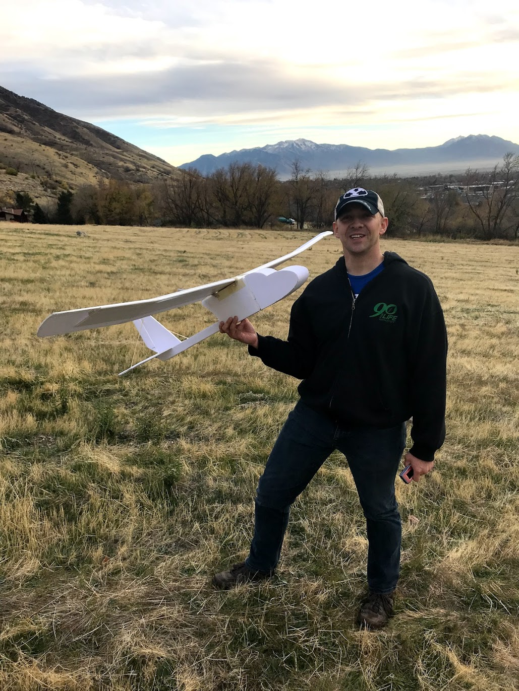

In a team of 7 we were able to first make a small foamy plane and then follow it by making a stratus flyer that was able to fly itself to given waypoints and then drop a package at the initial start point. This entire project was done in 4 months.
Here is the original foamy on the third test flight.

Here is a video of the initial test flight. Note: our pilot was just learning!
Here is a video of our final project and the plane doing its own waypointing.
A problem we find in drone tracking is that most collection of data comes in point clouds. However, creating lines from point clouds is surprisingly difficult. Adding difficulty, we want to create a map from points; something that for humans is very easy, but for a machine learning algorithm is very difficult for many reasons.
Here is an image of an incoming point cloud
Here is an image of some of the methods we used for testing the point cloud